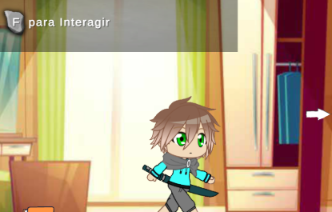
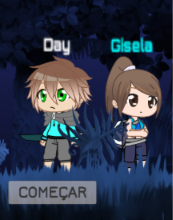
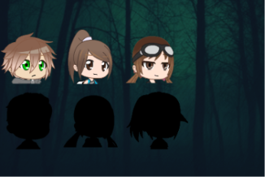

The Real End
A 2D narrative game where player decisions shape the story, accompanied by a competitive multiplayer mode.
Project Overview
The Real End is a 2D narrative game developed using Unity and C# as my Professional Aptitude Project (PAP). The main concept was to let players follow the story and important moments in the life of the main character, while allowing them to shape their own journey through decisions made throughout the game.
At specific moments, players are presented with different statements or questions and must choose how the character responds. These decisions influence subsequent events, introducing variations to the story and creating different experiences depending on the player's choices.
The original ambition was to create a game with significantly different outcomes for each player. Although the full narrative and branching system could not be completed within the available development time, several choice-dependent variations were successfully implemented.
The project also included a short multiplayer mode featuring a separate level where players competed to find the exit. Players could choose from different characters and skins unlocked throughout the main story, connecting progression from the single-player experience with multiplayer.
Main Features
Story-Driven Gameplay
Follow the main character through important moments in their life in a 2D narrative experience.
Player Decisions
Make choices at key moments by selecting different responses to statements and questions.
Choice-Dependent Events
Player decisions introduce variations to subsequent events and parts of the story.
Multiplayer Mode
Compete against other players in a separate level, racing to find the exit first.
Unlockable Characters & Skins
Choose different characters and skins unlocked throughout the main story to use in multiplayer.
Escape Challenge
Navigate the multiplayer level and find the exit before the other players.
Technologies & Tools
Project Gallery


